DV-GQ-003 · A GQ libera a avaliação da mudança sem parecer de nenhuma área quando a operação chega sem o botão
A GQ libera a avaliação da mudança sem parecer de nenhuma área. O botão Aprovar/Reprovar não aparece sem parecer, mas o servidor aceita a operação enviada sem o botão: a mudança foi a "Pendente Plano de Ação" sem nenhum parecer das áreas.
Como reproduzir o erro, passo a passo
- Abrir uma solicitação de mudança antes de qualquer área avaliar.
- Enviar a liberação da avaliação sem passar pelo botão.
Esperado
Exigir os pareceres das áreas antes de liberar.
Obtido
A mudança passou para "Pendente Plano de Ação" sem nenhum parecer das áreas.
Evidência (captura da tela)
DV-GQ-004 · A GQ aprova pelo botão normal uma mudança que a área "não aceitou"
Uma área registra "Não Aceito" (com observação) e a GQ, clicando no botão Aprovar normal da tela, libera a mudança: ela segue para "Pendente Plano de Ação" apesar da recusa da área.
Como reproduzir o erro, passo a passo
- Em uma solicitação de mudança, a área registra "Não Aceito" com observação.
- Na liberação da avaliação, a GQ clica em Aprovar.
Esperado
Não seguir sem tratar o "não aceito" da área (o plano de testes pedia registrar se aprovasse apesar da recusa).
Obtido
A mudança seguiu para "Pendente Plano de Ação".
Evidência (captura da tela)
DV-GQ-235 · A solicitação de mudança não pode ser recusada: o botão Reprovar nunca aparece na Pré-Avaliação
A Pré-Avaliação não tem caminho para recusar uma solicitação. O botão Reprovar não aparece em nenhuma situação da mudança (Pendente Revisão, Pendente Definição Áreas Avaliação e Pendente Liberação Avaliação). Os botões vistos são só Adicionar, Enviar, Voltar, Imprimir e Salvar Revisão. A GQ só consegue aceitar; a mudança nunca chega a Não Aceito por esta tela.
Como reproduzir o erro, passo a passo
- Abrir a Pré-Avaliação de uma mudança em Pendente Revisão e procurar o botão Reprovar.
- Repetir com a mudança em Pendente Definição Áreas Avaliação e em Pendente Liberação Avaliação.
Esperado
Existir o botão Reprovar, com justificativa obrigatória, levando a mudança a Não Aceito (fluxo da equipe; CT-GQ-032).
Obtido
Em nenhuma das três situações o botão aparece; só há Salvar Revisão (aceitar). Confirmado em quatro mudanças diferentes.
Evidência (captura da tela)
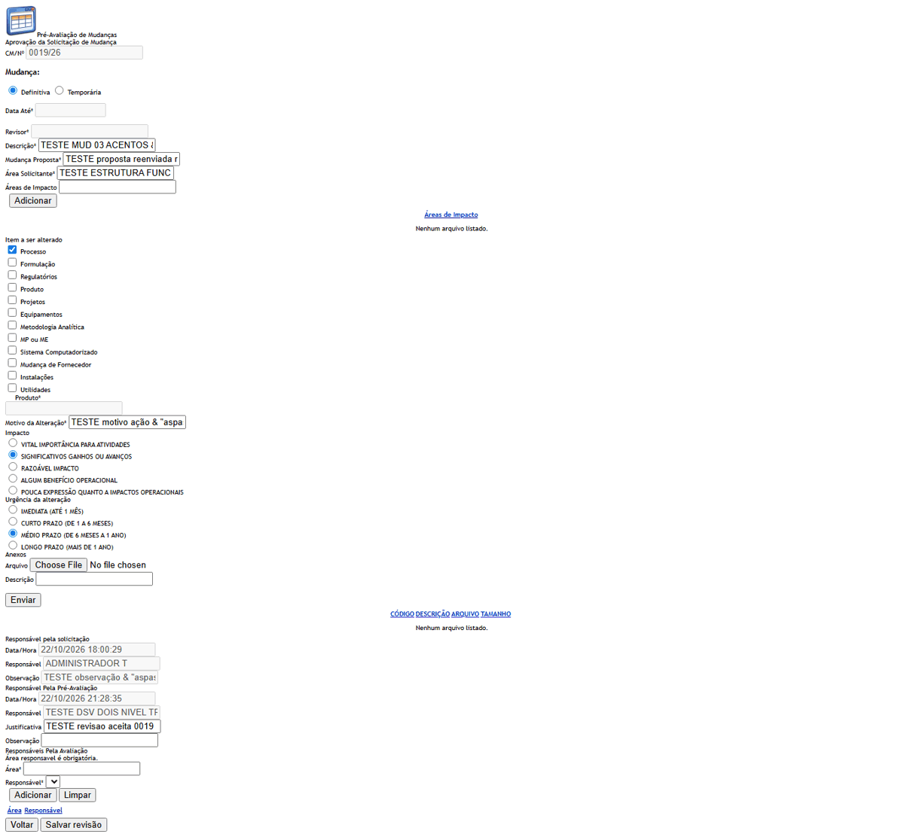
DV-GQ-236 · Salvar as áreas depois de adicionar e remover a mesma área é aceito, e a mudança fica sem área
Na escolha das áreas que avaliam, adicionar uma área e remover a mesma antes de salvar passa pela regra "área responsável é obrigatória". Aparece "Alteração efetuada com sucesso." e a mudança vai a Pendente Liberação Avaliação sem nenhuma área. A Liberação ainda a aprova (ver DV-GQ-244). A recusa só vale quando a grade nunca teve nenhuma linha.
Como reproduzir o erro, passo a passo
- Abrir a Pré-Avaliação de uma mudança em Pendente Definição Áreas Avaliação.
- Adicionar uma área e, em seguida, excluir a mesma linha da grade.
- Clicar em Salvar revisão e confirmar.
Esperado
"Área responsavel é obrigatória." e nada gravado.
Obtido
"Alteração efetuada com sucesso." A mudança segue a Pendente Liberação Avaliação sem nenhuma área para avaliar.
Evidência (captura da tela)
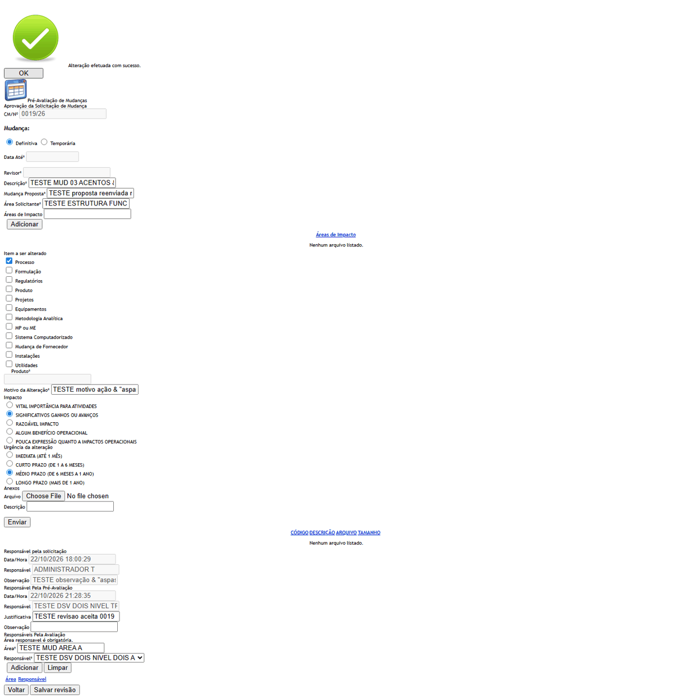
DV-GQ-239 · O parecer "Não Aceito" da área é trocado para "Aceito" sem pedir justificativa
Um parecer já gravado como Não Aceito pode ser reaberto pelo lápis e regravado como Aceito sem justificativa. O histórico mostra a troca ("Não Aceito → Aceito") com data, hora e usuário, mas com a justificativa em branco. O Não Aceito anterior e a justificativa dele continuam no histórico.
Como reproduzir o erro, passo a passo
- Gravar o parecer da área como Não Aceito, com justificativa.
- Reabrir o parecer pelo lápis e clicar em Aceito.
- Abrir o histórico da mudança.
Esperado
Pedir o motivo da mudança de decisão e registrá-lo no histórico.
Obtido
Aceito é gravado sem justificativa; o histórico traz a troca com a justificativa em branco.
Evidência (captura da tela)
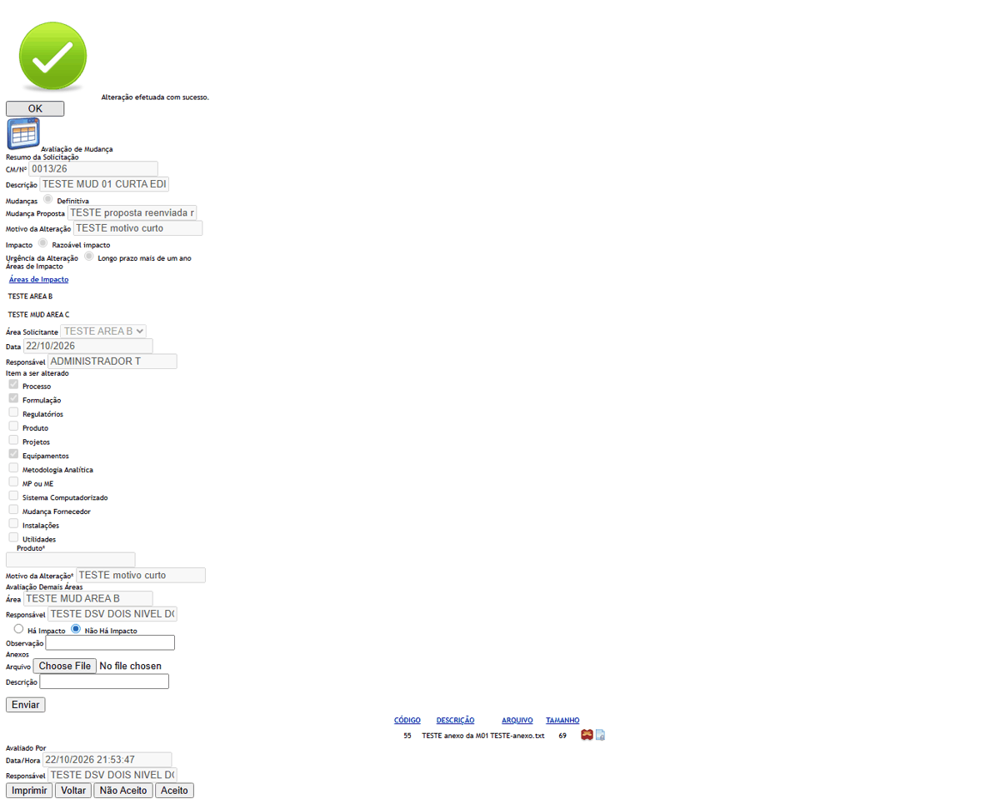
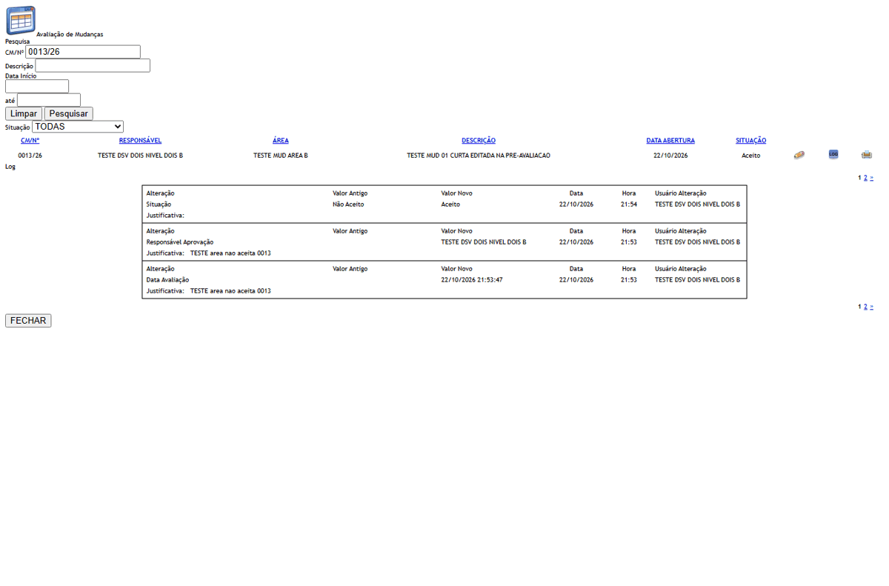
DV-GQ-241 · A área exclui o anexo de outra pessoa sem confirmação, sem justificativa e sem registro no histórico
O anexo enviado em uma tela entra na mesma grade de anexos da mudança e aparece nas telas seguintes. Quem avalia pela área conseguiu excluir o anexo do solicitante: o arquivo saiu na hora, sem pedir confirmação nem justificativa, e o histórico da mudança não registra a exclusão (só a inclusão de um anexo). Na Liberação o botão Excluir aparece para todos os anexos, inclusive os de outras pessoas.
Como reproduzir o erro, passo a passo
- Enviar um anexo na Solicitação.
- Na Avaliação da área, abrir a mudança e clicar em Excluir no anexo do solicitante.
- Abrir o histórico da mudança.
Esperado
Excluir só o próprio anexo (ou a GQ, com justificativa) e deixar o rastro no histórico.
Obtido
O anexo do solicitante foi excluído sem confirmação nem justificativa; o histórico não tem a exclusão.
Evidência (captura da tela)
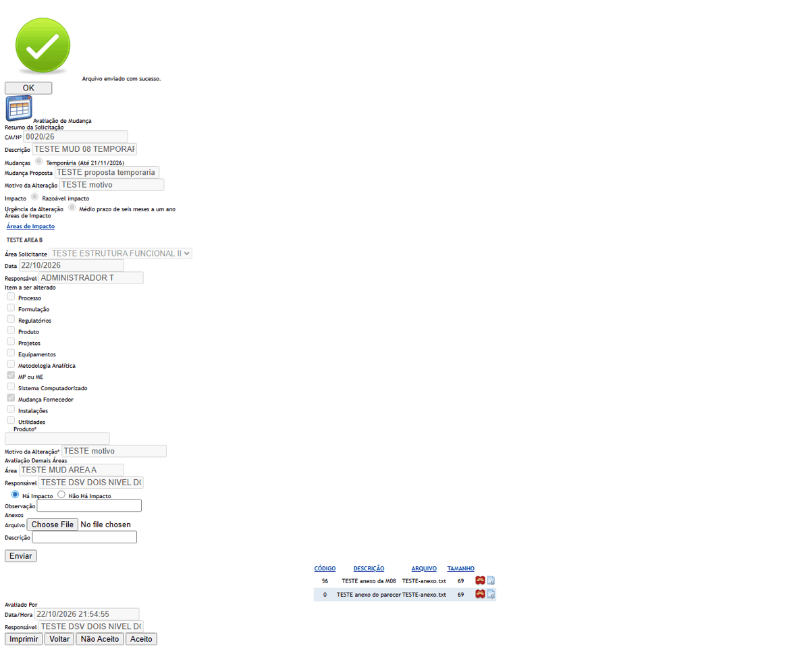
DV-GQ-244 · A Liberação mostra Aprovar e Reprovar para uma mudança sem nenhuma área e sem parecer, e a aprova
Uma mudança sem nenhuma área para avaliar (efeito do DV-GQ-236) abre na Liberação com os botões Aprovar e Reprovar visíveis e o quadro "Avaliação Demais Áreas" vazio. Aprovada, foi a Pendente Plano de Ação sem nenhum parecer. Com áreas pendentes (caso CT-GQ-M04-02) os botões não aparecem.
Como reproduzir o erro, passo a passo
- Levar uma mudança a Pendente Liberação Avaliação sem nenhuma área (DV-GQ-236).
- Abrir a Liberação dessa mudança e clicar em Aprovar.
Esperado
Não permitir a liberação sem nenhuma avaliação de área.
Obtido
Aprovar e Reprovar aparecem; a mudança foi aprovada e seguiu para o Plano de Ação sem parecer de nenhuma área.
Evidência (captura da tela)
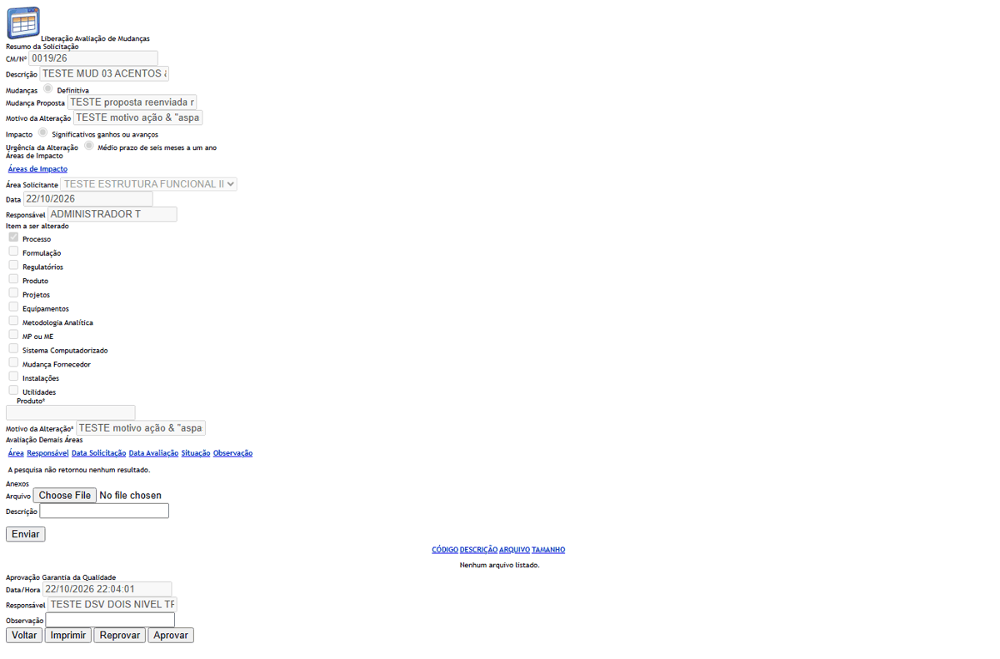
DV-GQ-268 · A lista de responsáveis oferece a conta inativa; "Alteração efetuada com sucesso."; a mudança fica em Pendente Avaliação na área com um responsável qu
A lista de responsáveis oferece a conta inativa; "Alteração efetuada com sucesso."; a mudança fica em Pendente Avaliação na área com um responsável que não consegue entrar; só a GQ pode dar o parecer no lugar dele.
Como reproduzir o erro, passo a passo
- Criar uma área cujo responsável é uma conta inativa (TESTE CONTAINATIVA, Ativo = NÃO) e outra com um usuário de teste sem permissão;
- na Pré-Avaliação da 0038/26 adicionar a área e Salvar.
Esperado
Só aparecem como responsável da avaliação pessoas que podem entrar e dar o parecer; ou aviso de que o responsável está inativo.
Obtido
A lista de responsáveis oferece a conta inativa; "Alteração efetuada com sucesso."; a mudança fica em Pendente Avaliação na área com um responsável que não consegue entrar; só a GQ pode dar o parecer no lugar dele.
Evidência (captura da tela)
DV-GQ-339 · O Nível 1 e o Nível 2 de qualquer área aprovam a Liberação da Avaliação de Mudanças (e o sistema responde "Inclusão efetuada")
Na lista, só o Nível 3 vê o lápis da Liberação (os Níveis 1 e 2 veem só a lupa). Mas quem abre a mesma tela de edição **pelo endereço** (`/Avaliacao/LiberacaoAvaliacaoMudanca/Editar?Id=29`) vê os botões **Reprovar** e **Aprovar**, seja Nível 1, Nível 2 da área A ou Nível 2 da área B. O Nível 1 clicou Aprovar: a tela perguntou "Confirma a inclusão do item?", respondeu "Inclusão efetuada com sucesso." e a mudança 0029/26 saiu de "Pendente Liberação Avaliação" para "Pendente Plano de Ação". O histórico registrou o usuário de Nível 1 (12/11/2026 00:44). Nenhuma mensagem de "sem permissão".
Como reproduzir o erro, passo a passo
- Entrar com o usuário Nível 1 (consulta) e abrir Controle de Mudanças › Liberação Avaliação de Mudanças: só há lupa.
- Abrir o endereço da edição da liberação 0029/26 (.../Avaliacao/LiberacaoAvaliacaoMudanca/Editar?Id=29).
- Conferir os botões Reprovar e Aprovar; clicar em Aprovar e confirmar.
- Abrir o Log da solicitação 0029/26 como administrador.
Esperado
O servidor recusar a aprovação de quem não é da Garantia da Qualidade Nível 3, e a tela avisar "sem permissão".
Obtido
A aprovação foi aceita e gravada em nome do Nível 1.
Evidência (captura da tela)
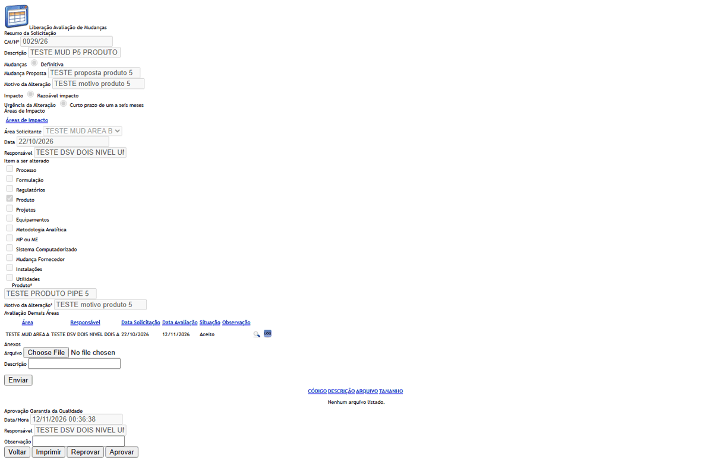
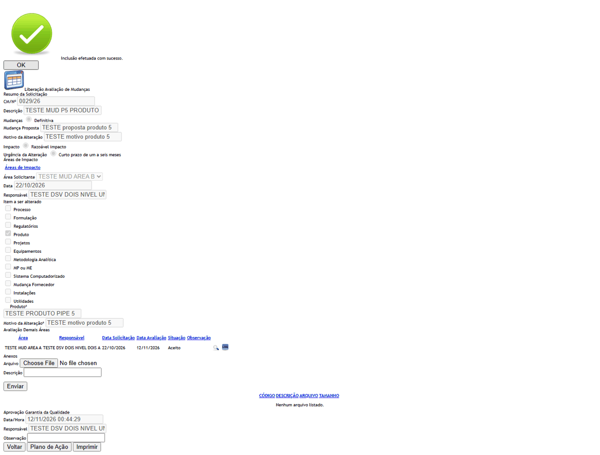
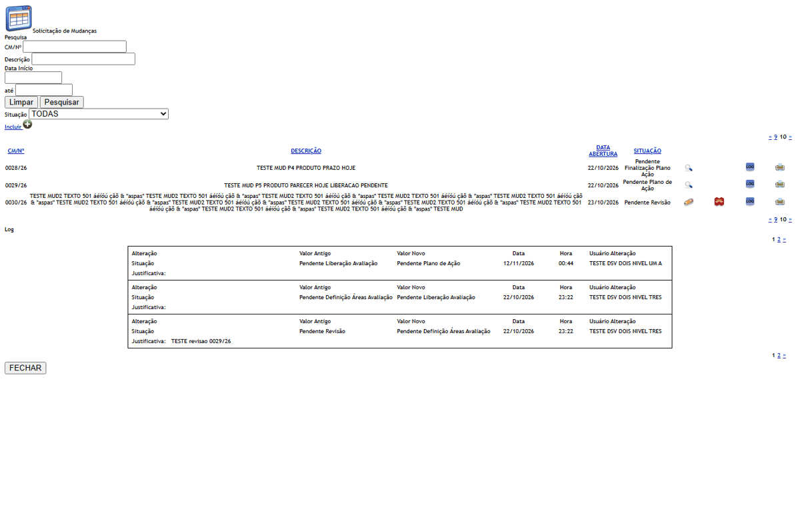
DV-GQ-237 · O histórico da Pré-Avaliação não registra as áreas escolhidas, as áreas de impacto incluídas nem a observação
O histórico da mudança, depois da Pré-Avaliação, traz as mudanças de situação e a justificativa da revisão, mas não traz as áreas e os responsáveis escolhidos, a área de impacto incluída nem a observação da pré-avaliação. Quem escolheu as áreas só aparece pelo nome na linha de situação. Os campos que aparecem vêm com nome técnico (por exemplo "CurtoPrazoDeUmASeisMeses") e o item alterado com valor antigo "Nenhum".
Como reproduzir o erro, passo a passo
- Fazer a Pré-Avaliação de uma mudança: mudar descrição, item e urgência, incluir uma área de impacto, aceitar a revisão e escolher as áreas.
- Abrir o histórico da mudança.
Esperado
Cada alteração com valor antigo e novo, incluindo as áreas escolhidas, as áreas de impacto e a observação, em linguagem do usuário.
Obtido
Faltam as áreas, os responsáveis, a área de impacto incluída e a observação; a urgência aparece com nome técnico.
Evidência (captura da tela)
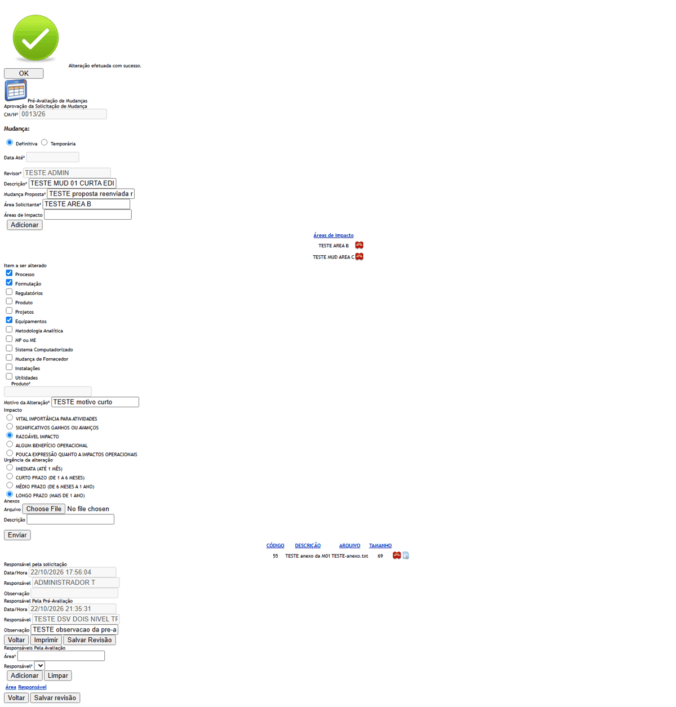
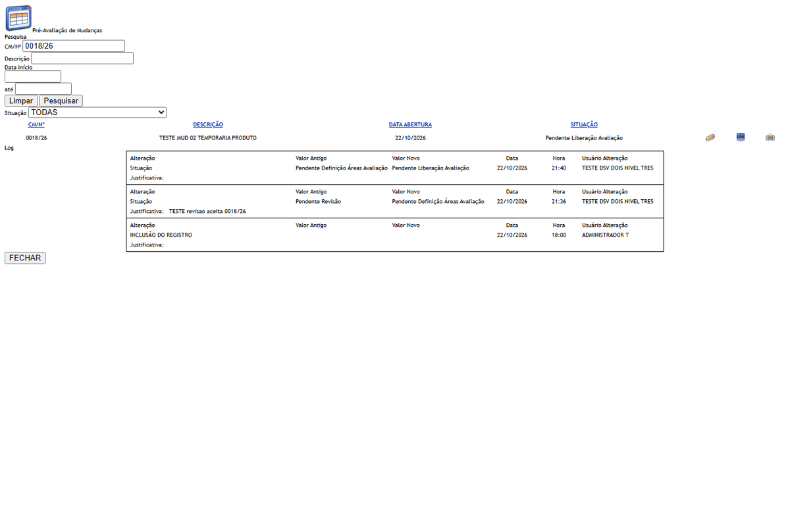
DV-GQ-240 · Enviar um anexo apaga a Observação já digitada (Avaliação e Liberação)
Ao enviar um anexo, o campo Observação já digitado volta vazio, nas telas Avaliação e Liberação. Em seguida a tela cobra a observação de novo ("Observação obrigatória quando Há impacto!"). Na Execução do Plano e no Controle Mudança Produto o envio do anexo não apaga os outros campos.
Como reproduzir o erro, passo a passo
- Na Avaliação, marcar "Há impacto", digitar a Observação e enviar um anexo.
- Clicar em Aceito.
- Repetir na Liberação: digitar a Observação e enviar um anexo.
Esperado
O anexo entra na grade e a Observação continua preenchida.
Obtido
A Observação volta vazia depois do envio; Aceito recusa com "Observação obrigatória quando Há impacto!" até a observação ser digitada de novo.
Evidência (captura da tela)
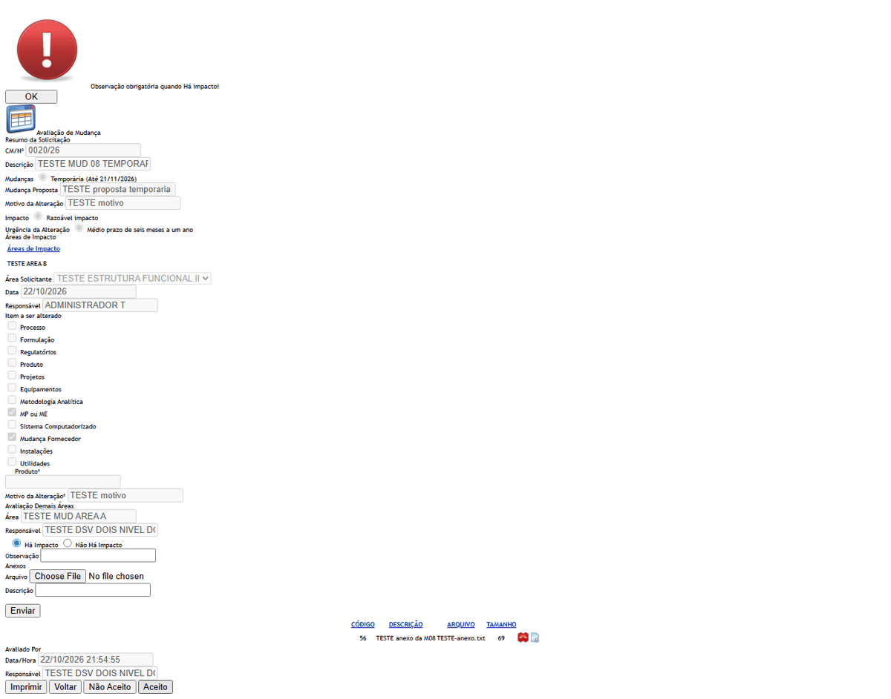
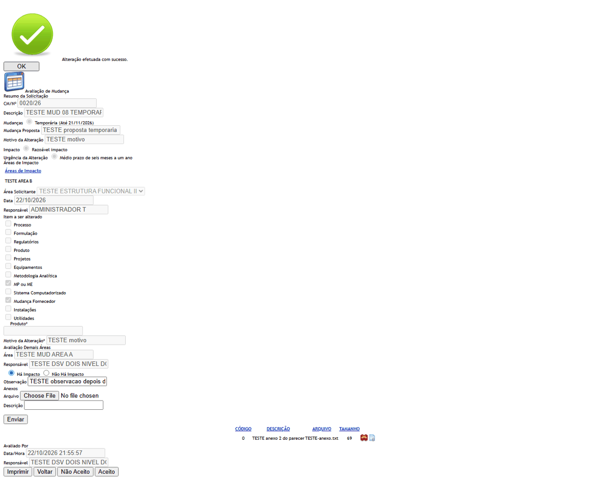
DV-GQ-242 · A GQ grava o parecer no lugar da área, sem aviso nem justificativa
A GQ abriu a avaliação de uma área cujo responsável é outra pessoa e gravou Aceito: o sistema gravou sem aviso e sem justificativa. O histórico registra o nome de quem gravou como "Responsável Aprovação", mas a linha da lista continua mostrando o responsável da área, como se ele tivesse avaliado.
Como reproduzir o erro, passo a passo
- Abrir a avaliação de uma área pelo usuário da GQ (que não é o responsável da área).
- Clicar em Aceito.
- Conferir a lista e o histórico.
Esperado
Avisar que a avaliação é de outra pessoa e pedir justificativa; a lista mostrar quem de fato avaliou.
Obtido
Gravou sem aviso; a lista mantém o responsável da área e só o histórico mostra a GQ.
Evidência (captura da tela)
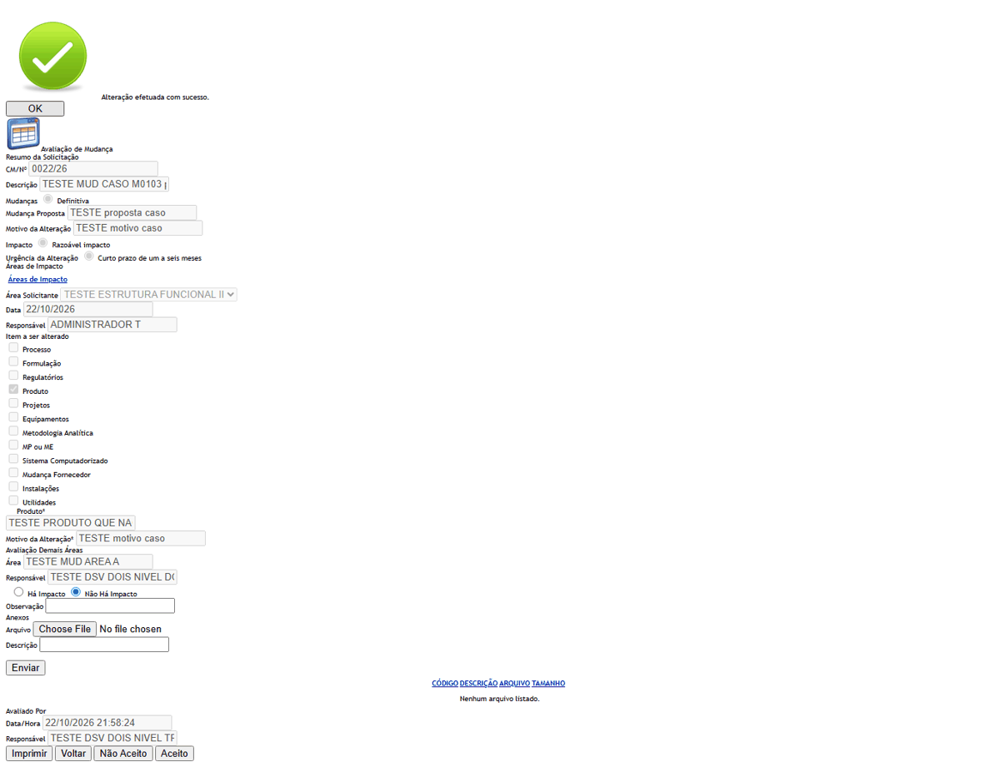
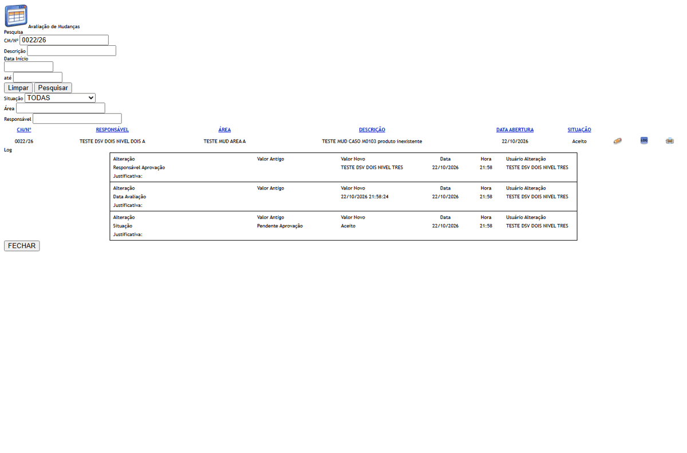
DV-GQ-245 · Aprovar a mudança na Liberação não pede justificativa e o histórico não traz o resumo dos pareceres
Reprovar pede justificativa e o histórico a mostra. Aprovar não pede justificativa: o histórico da aprovação traz a mudança de situação e quem aprovou, mas com a justificativa em branco, sem a observação nem o anexo da Liberação e sem resumir os pareceres das áreas.
Como reproduzir o erro, passo a passo
- Aprovar uma mudança na Liberação.
- Abrir o histórico da mudança.
Esperado
Registrar a decisão da GQ com a justificativa e os pareceres que a sustentam.
Obtido
O histórico da aprovação não tem justificativa, observação, anexo nem resumo dos pareceres.
Evidência (captura da tela)
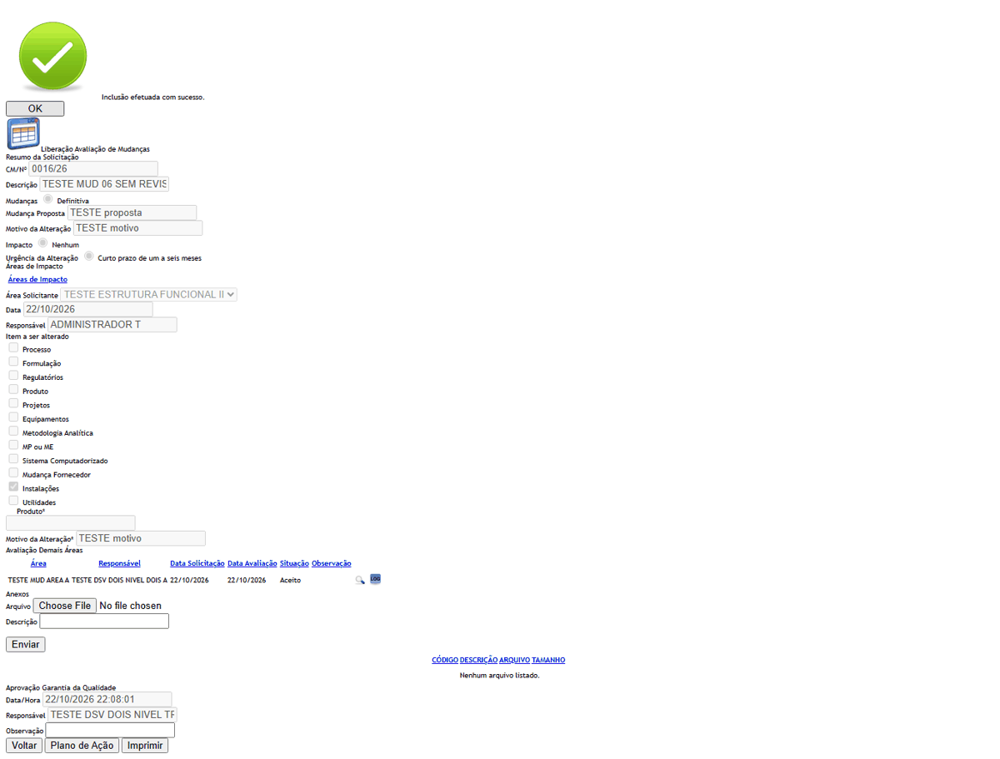
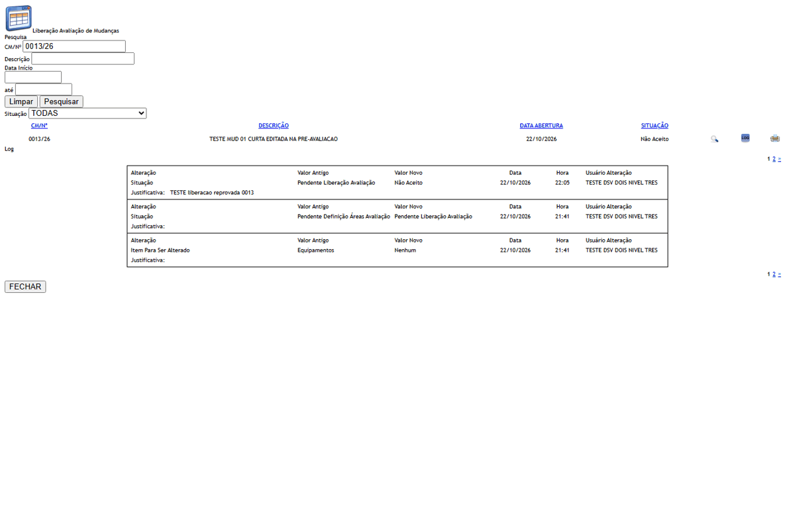
DV-GQ-266 · Mostra 23/10/2026, a data de hoje; o histórico da avaliação guarda 22/10/2026 23:22:39
Mostra 23/10/2026, a data de hoje; o histórico da avaliação guarda 22/10/2026 23:22:39. Inferência: a tela exibe a data da consulta.
Como reproduzir o erro, passo a passo
- Área A dá o parecer em 22/10/2026 (23:22);
- abrir a mesma mudança (0029/26) na Liberação em 23/10/2026.
Esperado
A coluna "Data Avaliação" do quadro das áreas mostra a data do parecer (22/10/2026).
Obtido
Mostra 23/10/2026, a data de hoje; o histórico da avaliação guarda 22/10/2026 23:22:39. Inferência: a tela exibe a data da consulta.
Evidência (captura da tela)
DV-GQ-273 · Vai a Pendente Liberação Avaliação já no primeiro parecer, com duas áreas pendentes, e aparece na lista da Liberação; a Liberação só libera Aprovar e
Vai a Pendente Liberação Avaliação já no primeiro parecer, com duas áreas pendentes, e aparece na lista da Liberação; a Liberação só libera Aprovar e Reprovar depois que a última avalia.
Como reproduzir o erro, passo a passo
- Mudança com 3 áreas (0033/26): a área A dá o parecer Aceito;
- ver a situação da mudança e a lista da Liberação.
Esperado
A mudança só vai a Pendente Liberação Avaliação quando todas as áreas deram o parecer.
Obtido
Vai a Pendente Liberação Avaliação já no primeiro parecer, com duas áreas pendentes, e aparece na lista da Liberação; a Liberação só libera Aprovar e Reprovar depois que a última avalia.
Evidência (captura da tela)
DV-GQ-275 · O filtro é ignorado: Solicitação 45, Pré-Avaliação 16, Avaliação 33 e Controle Produto 9 (esperado 29, 11, 16 e 6)
O filtro é ignorado: Solicitação 45, Pré-Avaliação 16, Avaliação 33 e Controle Produto 9 (esperado 29, 11, 16 e 6). Na Liberação e no Plano funciona.
Como reproduzir o erro, passo a passo
- Preencher só a Data Fim (22/10/2026) e Pesquisar.
Esperado
Só as solicitações com data até 22/10/2026 (29 na Solicitação).
Obtido
O filtro é ignorado: Solicitação 45, Pré-Avaliação 16, Avaliação 33 e Controle Produto 9 (esperado 29, 11, 16 e 6). Na Liberação e no Plano funciona.
Evidência (captura da tela)

DV-GQ-340 · O Nível 2 de outra área imprime a avaliação de uma área que não é a dele, só trocando o endereço
A impressora da lista de Avaliação de Mudanças manda a área responsável no endereço (`Imprimir?id=2&IdAreaResponsavel=7`). O usuário Nível 2 da área B, que não vê esse registro na própria lista (a lista dele só traz mudanças da área B), pediu o mesmo endereço da área A e o sistema devolveu o PDF "FORMULÁRIO DE CONTROLE DE MUDANÇAS" da mudança 2, com a avaliação da outra área. O endereço de "Visualizar" sem o terceiro número deu erro técnico (página de erro do servidor).
Como reproduzir o erro, passo a passo
- Entrar com o Nível 2 da área B e abrir Controle de Mudanças › Avaliação de Mudanças (9 linhas, todas da área B).
- Colar o endereço de impressão de uma avaliação da área A (id 2, área 7).
Esperado
Recusar: o usuário só imprime avaliação da própria área.
Obtido
PDF aberto com os dados da outra área.
Sem captura de tela registrada para este defeito.
DV-GQ-344 · Aprovar e Reprovar da Liberação da Avaliação somem sem aviso quando ainda há área para avaliar
Na mudança 0038/26, que tem uma área ainda em "Pendente Avaliação", a tela de edição da liberação mostra só Voltar e Imprimir: Aprovar e Reprovar não aparecem e a tela não diz por quê. Na 0029/26, com todas as áreas avaliadas, os dois botões aparecem.
Como reproduzir o erro, passo a passo
- Abrir a edição da liberação 0038/26.
- Comparar com a 0029/26.
Esperado
Explicar "há áreas ainda sem avaliar" ou deixar os botões travados com a mensagem.
Obtido
Botões ocultos, sem mensagem.
Evidência (captura da tela)
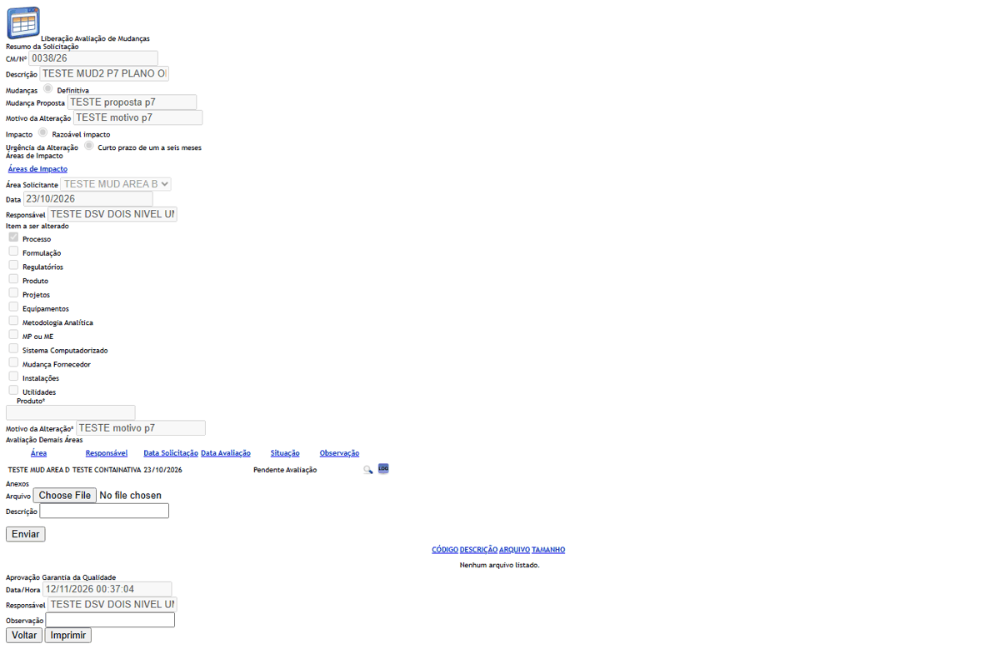

DV-GQ-238 · O PDF da pré-avaliação já revisada sai em duas páginas e a segunda só tem o cabeçalho
O formulário impresso de uma mudança já revisada sai em duas páginas; a segunda traz apenas o cabeçalho.
Como reproduzir o erro, passo a passo
- Imprimir uma mudança já revisada na Pré-Avaliação.
Esperado
Uma página com o quadro da pré-avaliação preenchido.
Obtido
Duas páginas; a segunda só tem o cabeçalho.
Sem captura de tela registrada para este defeito.
DV-GQ-243 · Letras na Data Fim da lista de Avaliação são ignoradas sem aviso
Na lista da Avaliação, letras digitadas na Data Fim são ignoradas e a lista volta como se a data estivesse vazia, sem mensagem.
Como reproduzir o erro, passo a passo
- Na lista da Avaliação, digitar letras na Data Fim e pesquisar.
Esperado
Aviso de data inválida ou campo que não aceita letras.
Obtido
A data é ignorada sem aviso e a lista volta completa.
Sem captura de tela registrada para este defeito.
DV-GQ-246 · A consulta do parecer e da Liberação reprovada não mostra a justificativa, a observação nem o quadro das áreas
O Visualizar do parecer da área mostra só a opção de impacto, sem a justificativa nem a observação. O Visualizar da Liberação reprovada mostra a justificativa da decisão, mas não a observação nem o quadro "Aprovação Demais Áreas".
Como reproduzir o erro, passo a passo
- Abrir o Visualizar do parecer de uma área já avaliada.
- Abrir o Visualizar de uma mudança reprovada na Liberação.
Esperado
A consulta mostrar tudo o que foi registrado, em leitura.
Obtido
Justificativa, observação e quadro das áreas ausentes na consulta.
Evidência (captura da tela)
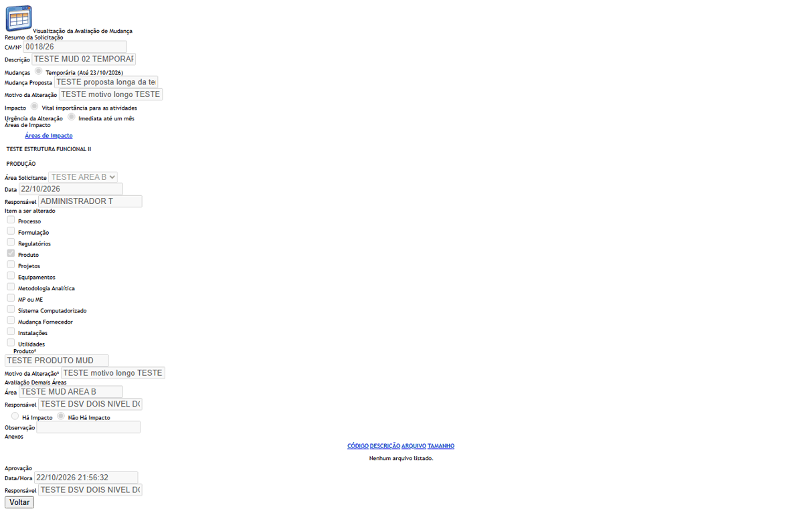
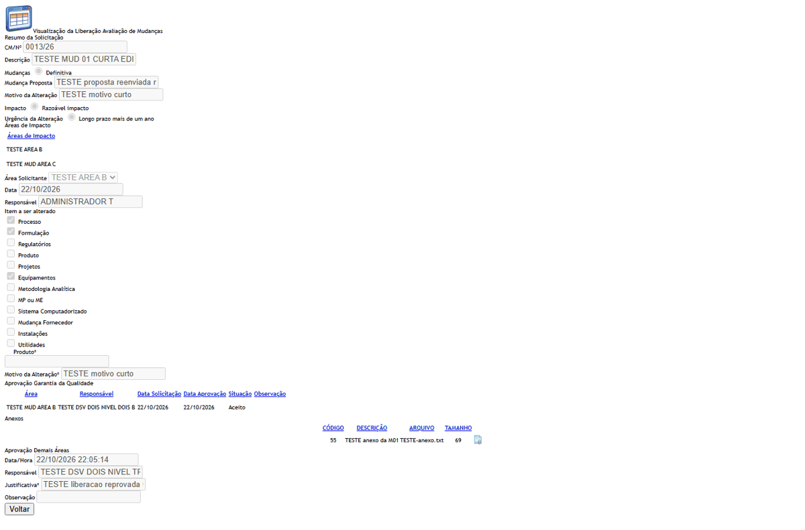
DV-GQ-276 · A lista traz mudanças Aceito (0002, 0019) e o filtro não tem a opção Aceito (só Não Aceito, Pendente Definição Áreas Avaliação e Pendente Revisão)
A lista traz mudanças Aceito (0002, 0019) e o filtro não tem a opção Aceito (só Não Aceito, Pendente Definição Áreas Avaliação e Pendente Revisão).
Como reproduzir o erro, passo a passo
- Abrir a lista da Pré-Avaliação e olhar a Situação do filtro.
Esperado
O filtro tem as situações que a lista mostra.
Obtido
A lista traz mudanças Aceito (0002, 0019) e o filtro não tem a opção Aceito (só Não Aceito, Pendente Definição Áreas Avaliação e Pendente Revisão).
Evidência (captura da tela)
DV-GQ-350 · Aprovar a Liberação da Avaliação pergunta e avisa "inclusão"
Ao aprovar, a tela pergunta "Confirma a inclusão do item?" e responde "Inclusão efetuada com sucesso." Parecido com DV-GQ-105 e DV-GQ-338.
Como reproduzir o erro, passo a passo
- Clicar em Aprovar na liberação (ver DV-GQ-339).
Esperado
"Confirma a aprovação?" e "Aprovação efetuada".
Obtido
Texto de inclusão.
Evidência (captura da tela)
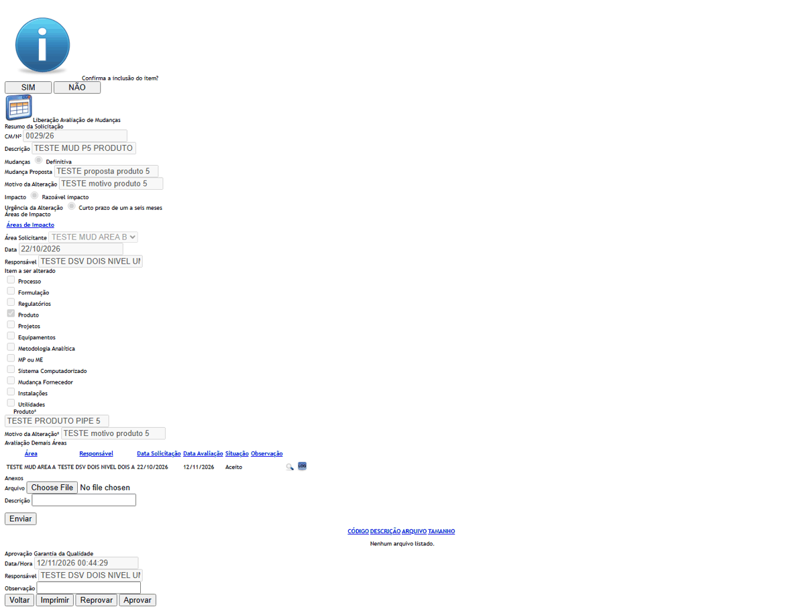